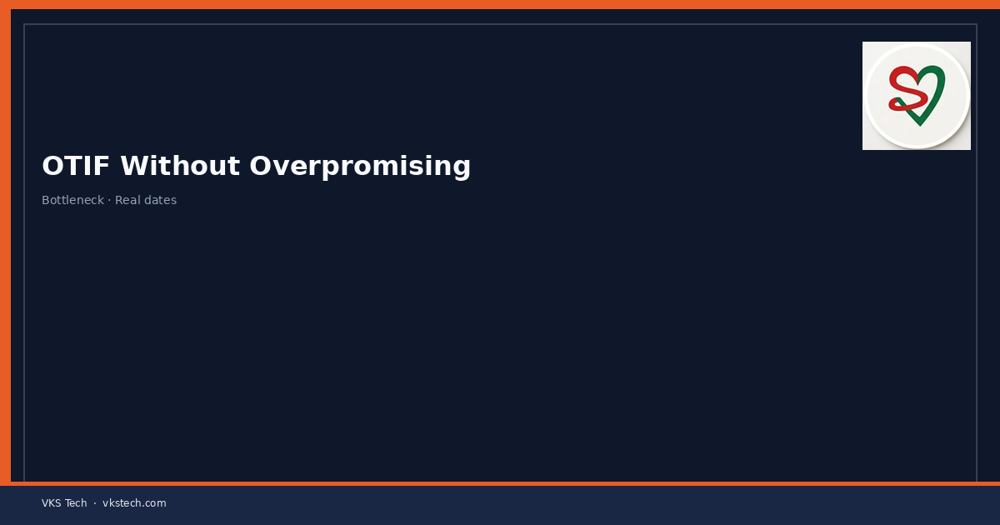
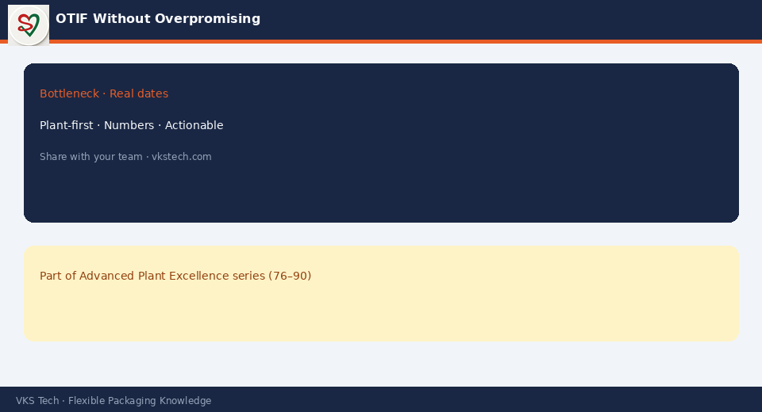

🎯 OTIF Improves When Planning Is Honest About Capacity, Changeovers and Risk — Not When Every Order Is Promised at the Earliest Possible Date
📖 11-min read · Delivery Performance · PPC + Sales + Plant Heads
On-Time In-Full (OTIF) is one of the few metrics that customers, sales and the plant all care about. Many converting plants try to improve OTIF by pushing harder and promising tighter dates. The result is usually more last-minute firefighting, more partial shipments and a lower, not higher, OTIF score. Sustainable OTIF comes from honest capacity planning and clear rules for what can be promised.
- OTIF fails most often because of over-promise, not under-execution
- Protect a realistic lead time that includes changeovers and buffer
- Give sales a clear available-to-promise view, not just “earliest possible”
- Track the reasons for every miss and attack the top 3 systematically
- Celebrate honest planning that hits the date more than heroic recovery

1. Why OTIF Actually Misses
| Common cause | What really happened |
|---|---|
| Late materials / cylinders | Promise was made before material readiness was confirmed |
| Machine overload | Capacity was already committed; new order was squeezed in |
| Quality / rework | No buffer left for normal process variation |
| Changeover cascade | Too many short runs planned without realistic changeover time |
| “Urgent” insertions | Sales or customer pressure overrode the plan without re-planning |
2. Practical Rules That Raise OTIF
- Standard lead time with buffer — Define a realistic lead time that already includes average changeovers, material lead time and a small safety buffer. Do not quote the theoretical fastest date.
- Available-to-promise (ATP) — Give sales a simple view of what capacity is still free in each week/month. Promises should come from remaining capacity, not from optimism.
- Order acceptance discipline — New orders that would break the plan need a visible trade-off (what moves, what is delayed) before the date is confirmed.
- Root-cause tracking — Every OTIF miss gets a reason code. Review the top reasons monthly and assign owners.
- Protect the plan — Once a week’s plan is frozen, changes require a formal swap or escalation, not informal “just fit this in”.
3. What PPC and Sales Should Align On
- The standard lead time and when it can be shortened (and at what cost)
- How capacity is calculated (after changeovers and efficiency, not brochure speed)
- The process for urgent insertions and who can approve them
- Shared visibility of the current load and the next 4–8 weeks
Measure OTIF, but also measure the percentage of orders that were promised inside the standard lead time. That second number tells you whether the system is honest.
🎯 OTIF तब सुधरता है जब प्लानिंग क्षमता, चेंजओवर और जोखिम के बारे में ईमानदार हो — जब हर ऑर्डर सबसे जल्दी तारीख पर वादा न किया जाए
📖 11-मिनट पढ़ें · डिलीवरी परफॉर्मेंस · PPC + सेल्स + प्लांट हेड्स
OTIF उन कम मेट्रिक्स में से एक है जिसकी परवाह ग्राहक, सेल्स और प्लांट तीनों करते हैं। कई प्लांट OTIF सुधारने के लिए और जोर लगाते हैं और तंग तारीखें वादा करते हैं। नतीजा आमतौर पर ज्यादा फायरफाइटिंग और कम OTIF होता है। स्थायी OTIF ईमानदार क्षमता प्लानिंग और स्पष्ट वादा नियमों से आता है।
- OTIF ज्यादातर ओवर-प्रॉमिस से फेल होता है, अंडर-एक्जीक्यूशन से नहीं
- यथार्थवादी लीड टाइम सुरक्षित रखें जिसमें चेंजओवर और बफर शामिल हो
- सेल्स को उपलब्ध-से-वादा व्यू दें, सिर्फ “सबसे जल्दी” नहीं
- हर मिस का कारण ट्रैक करें और टॉप 3 पर व्यवस्थित हमला करें